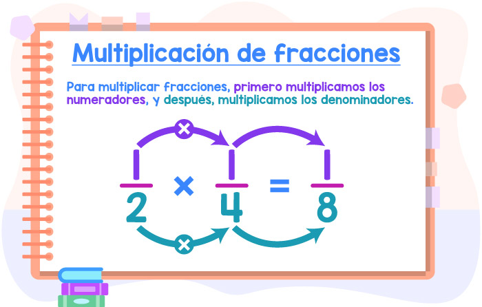

Home
Fracciones con Lu
TODO SOBRE FRACCIONES
Clasificación de fracciones
Fracciones equivalentes
Suma y resta de fracciones
Multiplicación y división de fracciones
Multiplicación y división de fracciones
Multiplicación de fracciones

División de fracciones
¿Querés saber un poco más? Mirá el siguiente video: